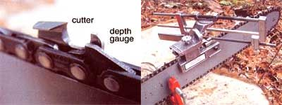
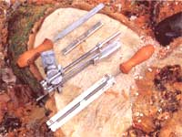
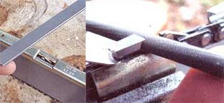
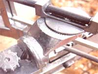
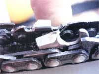

Keeping Your Chain Saw Sharp
How to safely sharpen a chain saw and keep it operational, including the tools of the trade, a filing guide, sharpen your skills first, extending bar and chain life, buying the right saw.
By Steve Maxwell
October/November 2002
Using a chain saw significantly cuts the time and energy devoted to homestead chores. But that's only true if the saw's chain is sharp. A dull chain saw is about as useful for cutting wood as a plastic spoon. To cut quickly and safely, saws must be sharpened often. With a few simple tools, here's how you easily can do it yourself.
Successfully sharpening a chain saw involves three steps: shaping the chisel-like teeth that cut wood (they're call cutters); adjusting the parts of the chain that regulate the bite taken by each cutter (called depth gauges); and fine-tuning the tension of the chain so it runs freely, with no slack, around the bar. Think of a saw chain as a linked row of small chisels. Each cutter is a chisel it takes a bite as it travels across the wood. If all the bites are crisp, equal and even from side-to-side, you've got a hungry, smooth-running and well- sharpened chain.
Tools of the Sharpening Trade
While I was a university student during the early 1980s, I worked part time for a Mennonite farmer named Paul. His ancestors settled the land in 1816, and preserved a magnificent maple sugar bush while other pioneers slashing and burning like mad. When we weren't making maple syrup, we cut firewood for sale from a forest that included century-old maples big around than trash cans.
Sharpening chain saws was Paul's exclusive job, and I soon understood what a really sharp saw could do. He used only a round file, a vise welded the bucket of his tractor, and a well-trained eye to get results that sent long curls of wood showering out of the saw he gave me to cut through oak, oral and hickory. Using a file freehand looked easy, until I attempted to sharpen my own saw a few years late) spent hours trying to succeed, yet still had a saw with no appetite for work.
But all that changed when I bout some tools to help. Choosing the right is the first step to hone; your chain saw sharpening skills. And unless you want to spend years training your eye to guide a file without help, that means more than just a round file. But not much more. Here are the tools you need for successful sharpening:
- a filing guide and round files
- a depth-gauge guide and flat
- a stump vise (optional) for in the field sharpening
The type of filing guide I recommend, shown in the Image Gallery, is made several manufacturers. It clamps to the chain bar and regulates the travel of a round file over the cutters. Consistent filing strokes in the correct direction lead to a sharp saw chain, and a filing guide reliably serves this function.
You'll also need a sharp round file to fit the filing guide, but it has to match the size of your chain. Cutters are usually designed to be sharpened with 5-inch- or 7/32-inch-diameter files. Either your owner's manual or the saw-chain instruction sheet that comes with a new chain lists what's needed. Replace the file every five or six sharpenings for best results, and don't let your new files clang around in a toolbox unprotected, which dulls them as quickly as hard use does. Wrap each new file in cloth, after coating it in a lightweight machine oil, such as 3-in-One lubricating oil. That way they'll stay in top shape, ready for use.
Depth-gauge guides are used to shape depth gauges, those rounded parts of the chain that extend upward in front of every cutter. If you look closely, you'll see that they reach almost to the top of each cutter edge, but not quite. The distance each cutter extends above the depth gauge is usually about 0.025 of an inch. This distance determines how deeply the cutters bite into the wood. As the cutters wear down, the depth gauges also need to be filed down, usually after every three or four sharpening sessions. And the depth-gauge guide lets you do that easily. Consistency is crucial: Don't try to file without a guide.
Sharpen Your Skills First
Practice sharpening on a saw chain that's almost new, ideally a chain that has become dull for the first time. Since crucial details like cutter angle and depth-gauge height still will be close to ideal, sharpening a nearly new chain is always easier. It also provides a great way to adjust your filing guide and learn how to use it well. If you have a half-worn chain on your saw right now, replace it with a new one before attempting to sharpen. By the time your new chain is worn, you'll be better at coaxing a full life from the old one when it goes back on.
Ready, Set, Sharpen
Start work by tightening the chain on your saw's bar so all the slack is gone. The chain should still slide around the bar with moderate hand effort. This is too tight for use, but is ideal for sharpening because each link becomes rigid under tension.
Between the bar and the body of the saw you'll find a small slot-head screw that tightens saw-chain tension. To tighten the chain, first loosen the two nuts that hold the bar, then turn the screw clockwise.
Next, clamp your filing guide in the middle of the bar. along the top edge. Full-featured filing guides include metal fingers designed to support the chain links as they're filed. Position the tips of these fingers at the base of the cutters, just above the rivets of the chain, then clamp the guide to the bar by tightening the anchoring wing bolt. You're now just a few adjustments away from filing the cutters.
Now's the moment when learning to file on a nearly new chain really pays off. I could make your eyes glaze over by listing all the various angles to which you need to adjust your guide, depending on chain type and size, but I'll spare you that. Instead, let your chain do the talking.
The filing guide has several angle adjustments (see the Image Gallery). Swivel the file in the guide so it matches the angle of the cutter's edge, usually 25 degrees or 35 degrees from perpendicular to chain travel. Loosen the adjustment knob on the guide, then nestle the file into the cutter. Match the cutter's angle before firmly locking that setting.
Most saw-chain cutters should be sharpened with the file pointing upwards a bit towards the cutter's point, usually 5 degrees from horizontal. Use the adjustment scale just below the guide's top scale to fine-tune this setting. Looking closely at the file and cutter will show you if the adjustment is correct.
The sprocketlike dial at the bottom of the guide controls the height of the file relative to the cutters. About one-fifth of your files diameter should extend above the cutter's working edge. This correctly sets the angle of the edge. Cutter edges that are too shallow dull quickly; cutters that are too blunt don't slice wood well. With practice, adjusting your filing guide will take less time than reading how to do it. Position your file to match the shape of the cutters on your nearly new chain.
Files last longer and cut better when they are lubricated. I use a lubricating oil, such as WD-40, from a pump-style oilcan to keep the file wet during use.
File the Cutters
I prefer to sharpen each cutter with file strokes that go toward the cutter's point. Filing is smoother and easier this way, though some prefer to file the opposite direction. Regardless of which you choose, count the number of strokes needed to bring the tip of the dullest cutter to a crisp edge, then repeat that same number of strokes for all other cutters. Maintaining consistency from cutter to cutter helps guarantee an effective saw chain. Since cutters alternate in direction along the chain, you'll need to file every second cutter, then flip the filing guide around to file the cutters pointing in the other direction. This also means swiveling around the sliding carriage that holds the file, and duplicating the angles you used earlier.
File the Depth Gauges
This part of the job is easier than filing cutters for two reasons. First, you only need to adjust depth-gauge height every three or four sharpenings. And even then, the job takes little time. Simply set the depth-gauge guide on the chain so it straddles the top of two neighboring cutters, with the depth gauge poking out the opening in the middle of the guide. Next, with a small, flat file made for the job, remove any part of the depth gauge that extends above the slot in the guide. It usually takes just a few strokes of the file biting into the depth gauge before the excess is gone. Since the guide is made of very hard steel, the file doesn't remove any metal from it. When the file seems to slide over the guide easily, it's time to move on to the next depth gauge. After filing the whole chain like this, remove the guide and round-over the now-flattened top of each depth gauge with a few more strokes of the flat file. Direct your efforts along the leading edge of each gauge. You don't want to reduce their height, just ease their travel over the wood by rounding the leading edges.
Remember how you over-tightened the chain to make filing easier? Now's the time to slacken it for actual use. Unscrew the two nuts that anchor the bar, then back off the tension screw so the chain hangs loosely. With one hand holding up the tip of the bar, slowly tighten the tension screw with the other hand and watch the slack disappear along the bottom edge. When it's almost gone, tighten the bar nuts and rotate the chain with a glove-covered hand. It will rotate freely- if the tension is correct.
Extending Bar and Chain Life
Since most sawing is done using the bottom edge of a chain saw's bar, this is the spot that wears out first from the pressure of the sliding chain. As a bar wears, its edges deteriorate and prevent the chain from sliding freely and tracking straight. Flip the bar over with every new chain you install. It spreads out wear and maximizes bar life.
Bought a new saw chain? Don't just throw it on and start cutting. You'll get longer chain life if you first soak it overnight in clean chain oil. After installing and tensioning the new chain, run it at half throttle for two minutes before cutting anything. Stop the engine, check chain tension, then re-adjust after letting the chain cool. The initial wear can cause it to loosen quickly. And you don't want that to happen under a cutting load.
Buying the the Right Saw
I've used every size and quality of chainsaw over the years, and I've come to believe that it someone needs a chainsaw for tough work. they should choose more than a bargain basement model. There are lots of cheap chainsaws around, but you'd be better off with a sharp bow saw.
So how do you assess a chainsaw? I start with chain size. The photo below shows the difference in cutter size between the first chainsaw I owned, and the one I use now. The larger chain, described as having a 3/8-inch pitch, cuts much more aggressively than the smaller 1/4-inch-pitch chain. If you're cutting more than a few tree limbs a year, consider a saw with either 3/8-inch or a 0.325-inchpitch chain.
To spin this sort of hardware, a saw needs a substantial motor. The saw I own now has a 61.5-cubic centimeter engine; if I were to make a recommendation to a friend with a woodstove to feed, I'd say buy a saw with at least a 45-cc motor.
If you're considering buying a used saw, choose one with both a chain brake and an inertia brake. Both stop the chain quickly during a kickback event, reducing your chances of sustaining serious injury.
 STEVE MAXWELL A chainsaw blade up close. The teeth, known as cutters, bite into wood, while the depth gauges determine how deep the bite will be. Proper filing of both helps keep your chainsaw in good cutting condition. Center: Clamp your filing gauge in the middle of the bar, along the top edge, as shown above. |
 STEVE MAXWELL A full-featured filing guide (middle) is a great tool for beginners. The simpler guide (bottom) demands more skill for success. The flat file and depth-gauge guide (top) are used on depth gauges every few sharpenings. |
 STEVE MAXWELL Periodically filing depth gauges is one of the little-known tricks to maintaining saw-chain performance (left). Consistency is the key to a sharp saw: File each cutter with the same number of strokes (right). |
|
 STEVE MAXWELL |
 STEVE MAXWELL |
 STEVE MAXWELL |